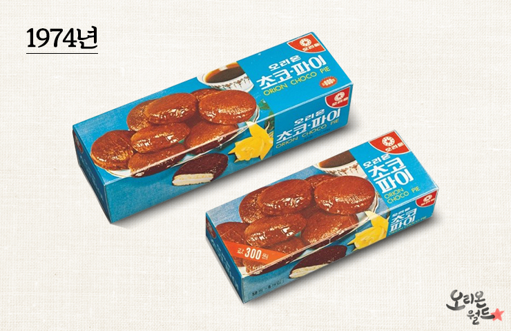

당시 동양제과였던 오리온의 한 연구원이 해외연수 중 초콜릿을 코팅한 과자를 보고 영감을 받아 개발을 시작했습니다.
2년에 걸친 실험과 실패를 거듭하며 초코파이가 탄생했습니다.
처음엔 상류층을 타겟으로 고급스러움에 주력했기 때문에 세련된 파란색 패키지를 사용했습니다.

THE FIRST CHOCO PIE
당시 동양제과였던 오리온의 한 연구원이 해외연수 중 초콜릿을 코팅한 과자를 보고 영감을 받아 개발을 시작했습니다.
2년에 걸친 실험과 실패를 거듭하며 초코파이가 탄생했습니다.
처음엔 상류층을 타겟으로 고급스러움에 주력했기 때문에 세련된 파란색 패키지를 사용했습니다.